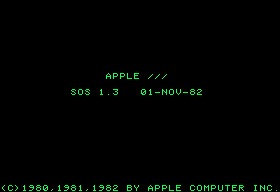

14
The X was the primary operating system developed for the Apple III computer. The system was developed by Apple Computer, Inc. and released in 1980. X made the resources of the Apple III available in the form of a menu-driven utility program as well as a programming API. In 1985, Steve Wozniak called X the 'finest operating system on a microcomputer ever.' Identify X.
